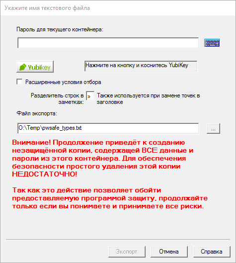

Password Safe поддерживает экспорт и импорт сохранённых паролей из различных форматов. Для экспорта элементов используйте пункт меню «Файл→Экспортировать в». Поддерживаются следующие форматы:
Для экспорта в форматы предыдущих версий Password Safe просто выберите нужный формат и укажите имя контейнера.
Чтобы экспортировать элементы в другой контейнер Password Safe, запустите ещё одну копию Password Safe (должен быть разрешён запуск нескольких экземпляров на вкладке Сервис→Настройки→Система) и создайте новый контейнер. Затем перетяните необходимые элементы или группы в новый контейнер.
Для экспорта используется мастер. В нём также можно задать расширенные условия отбора, позволяющие ограничить набор элементов и полей для экспорта. Для получения дополнительной информации см. здесь.
По окончании будет создан отчёт, содержимое которого может быть скопировано в буфер обмена или сохранено на диск в том же каталоге, где находится контейнер. Отчёт можно посмотреть позже с помощью меню Вид→Отчёты. Отчёт имеет фиксированное имя, зависящее от его типа. При повторении действия и сохранении отчёта на диск, предыдущий отчёт для этого действия перезаписывается. Примечание. Отчёт может содержать важные данные, поэтому возможность сохранения на диск следует использовать с осторожностью.
Password Safe позволяет произвести экспорт элементов в текстовый формат. Затем эти файлы могут быть использованы или изменены другими приложениями.
Для подтверждения экспорта данных в незащищённый текстовый файл, будет запрошен мастер-пароль. Если вы используете YubiKey, нажмите кнопку с надписью «YubiKey» и коснитесь кнопки на устройстве YubiKey. Затем будет предложено указать имя нового файла. Если такой файл уже существует, будет выдан запрос о его перезаписи.
Примечание. Если у вас нет YubiKey, соответствующие кнопки и поля не будут отображены.
Также можно указать дополнительные параметры:
Если поставить флажок «Расширенные условия отбора», будет доступна ещё одна страница, на которой можно задать ограничения по значению полей элемента, а также указать поля для экспорта. Для получения дополнительной информации см. здесь.
XML (eXtensible Markup Language) — распространённый формат для передачи данных между приложениями. Password Safe может экспортировать и импортировать содержимое контейнера в данный формат. Структура (схема) для экспорта и проверки документа определена в файле pwsafe.xsd, который идёт в комплекте с Password Safe. Этот файл используется Password Safe при импорте данных из формата XML и может потребоваться приложениями, которые будут обрабатывать экспортированные данные.
Отображение XML-файлов в браузере описывается в стилевом файле pwsafe.xsl (XSL — eXtensible Stylesheet Language). Файл, идущий в комплекте с Password Safe, является примером оформления и может быть изменён под ваши нужды. Так как стилевой файл лишь задаёт отображение данных, а не изменяет их, его содержимое не влияет на импорт из XML-файла в контейнер Password Safe.
Как и в настройках экспорта в простой текст, вы можете указать поля для экспорта и сделать отбор по содержимому поставив флажок «Расширенные условия отбора». На следующей странице мастера будет отображён диалог:

Если поставить флажок «Расширенные условия отбора», будет доступна ещё одна страница, на которой можно задать ограничения по значению полей элемента, а также указать поля для экспорта. Примечание. По XML-схеме требуется, чтобы присутствовали поля «Заголовок» и «Пароль», поэтому их нельзя убрать из списка экспортируемых. Для получения дополнительной информации см. здесь.
Возможен экспорт одного элемента или группы элементов в простой текстовый файл, XML-файл или текущий формат Password Safe. Для этого щёлкните правой кнопкой мыши на элементе или группе и выберите тип экспорта из подменю «Экспортировать элемент в» или «Экспортировать группу в».
При экспорте в текстовый файл и формат XML набор параметров совпадает с тем, что доступен при экспорте всего контейнера.
Если активен фильтр, то можно экспортировать отобранные элементы в текущий формат Password Safe. Указанные способы экспорта также доступны через подменю «Экспортировать в» в меню «Файл».
Примечания: